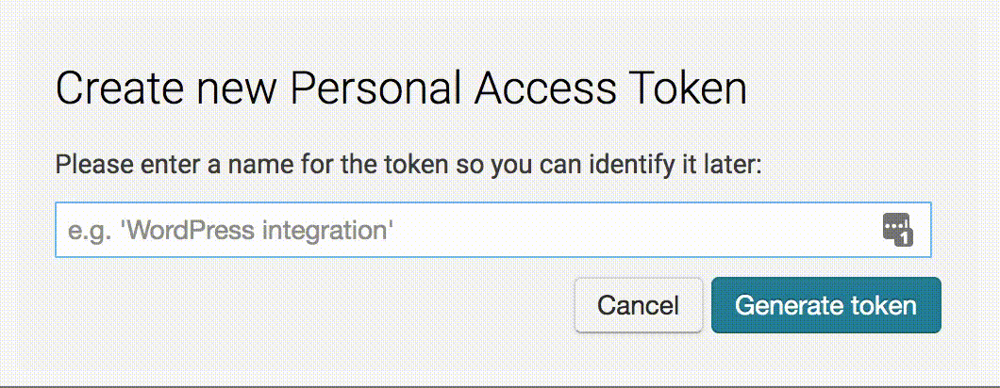

DatawRappr
The goal of DatawRappr is to provide a wrapper for Datawrapper’s API to connect data from R directly with Datawrapper’s charts capabilities. It uses the new API version 3.0.
Key features:
- Manages and automatically retrieves the API-key locally via
datawrapper_auth() - Creates, deletes or publishes charts on Datawrapper
- Sends Dataframes from R directly to Datawrapper - without having to copy them in - with
dw_data_to_chart()
All functions (except datawrapper_auth()) are preceded by dw_:
- allows test calls to the API via
dw_test_key() - lists all created charts:
dw_list_charts(). - lists all folders:
dw_list_folders(). - creates a new Datawrapper chart via
dw_create_chart() - adds data from a R-dataframe to an existing Datawrapper chart via
dw_data_to_chart() - retrieves (
dw_retrieve_chart_metadata()) or edits metadata, description and visualization of an existing chart viadw_edit_chart() - publishes and republishes a Datawrapper chart via
dw_publish_chart() - deletes an Datawrapper chart via
dw_delete_chart() - exports a chart as png, pdf or svg (latter two only in paid accounts) with
dw_export_chart()
Installation
Right now this package is experimental and only available on Github:
# install.packages("devtools") # if not already installed on your system
devtools::install_github("munichrocker/DatawRappr")Usage
library(DatawRappr)Setting up the API-key
To use the API you have to create an API key on Datawrapper.
Click on Dashboard - Settings and move down to the section that says API Access Tokens.
Click on Create new personal access token, enter a name and save the token:

Copy the API key in the clipboard and use
datawrapper_auth(api_key = "12345678")to save the key to our system. If a key already exists, you may add the argument overwrite = TRUE to datawrapper_auth().
To make sure, your key is working as expected, you can run
dw_test_key()with no arguments. It will then use the saved key from the environment. If the key is correct, you will receive a response from the API with personal details about your account - a dw_user-object that has no further use than to check your key.
Note: If you want to see your currently saved API key, you may use the helper function dw_get_api_key().
Congratulations, you’re good to go!
Making API-calls
Create a chart
To create an empty chart, you can use
dw_create_chart()which will use the API key stored locally on your system.
By default, Datawrapper will create an empty linechart, without a title. The function returns a dw_chart-object with the metadata-elements from the API. This object can be used to populate the chart_id-argument in all other functions - which means you don’t have to deal with it. Just store the response from dw_create_chart() in your R-environment.
Add data to the chart
To populate that chart with data, you can run
dw_data_to_chart(x = DATAFRAME, chart_id = CHART_ID_OR_dw_chart-object)which uploads an R data.frame to an Datawrapper chart.
The data.frame should already be in the right format, only including the expected columns for the chart. The API will asume, that the first row contains headers. If that’s not true, you have to edit the metadata afterwards:
Edit chart’s metadata
dw_edit_chart(chart_id = CHART_ID_OR_dw_chart-object, title = "I'm a title",
data = list(`horizontal-header` = "false"))Datawrapper offers a lot of variability in editing it’s charts’ metadata. You can find a whole Documentation here.
To speed things up, the dw_edit_chart()-function has some built-in arguments for common transformations:
title-
introwhich is the text below the title -
annotatewhich is the text below the plot -
bylinewhich is the name of the author -
source_namewhich states the source -
source_urlwhich links to the source - but only if asource_nameis provided
If you want to edit specific arguments in your plot, you can use the arguments data, visualize, describe and publish to include lists to the API call which change all possible settings in a chart, as shown in the example above.
When you’re finished editing your chart, you might want to publish it:
dw_publish_chart(chart_id = CHART_ID_OR_dw_chart-object)This function returns a URL to the chart and the embed code, if you set the argument return_urls to TRUE.
Delete chart
Or you might want to delete a chart:
dw_delete_chart(chart_id = CHART_ID_OR_dw_chart-object)Under the hood
This package makes heavy use of the httr-package, which on itself is a wrapper of the curl-package.
Further Links
There is a API-documentation and a Getting Started guide with examples from Datawrapper.
A full Package-documentation can be found here.